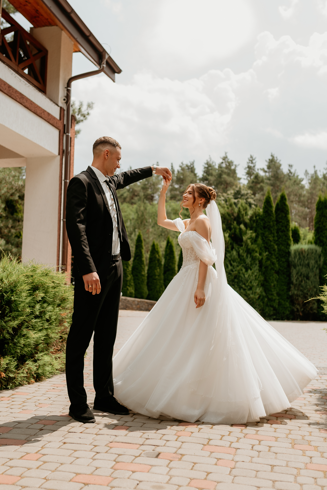
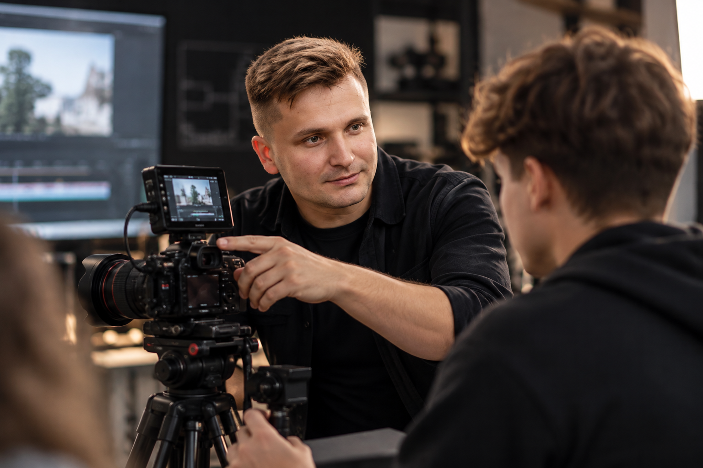

Фотографія
Історії, які хочеться пам’ятати
Живі емоції, природне світло та увага до деталей. Фотографія, яка допомагає зберегти атмосферу важливих подій.
Обговорити проєкт ›
ПОРТФОЛІО · ФОТО / ВІДЕО
Створюю візуальні історії, що передають емоції. Фотографія, відеозйомка та креативні цифрові проєкти — від ідеї до готового результату.
Переглянути роботи ›
НАПРЯМИ, З ЯКИМИ ПРАЦЮЮ
ВИБРАНІ ПРОЄКТИ
Кожен проєкт — це окрема історія, продумана від першої ідеї до фінального кадру.
Живі емоції, природне світло та увага до деталей. Фотографія, яка допомагає зберегти атмосферу важливих подій.
Обговорити проєкт ›
Працюю з композицією, рухом камери, світлом і монтажем, щоб створити цілісну візуальну розповідь.
Обговорити проєкт ›
Допомагаю розвивати операторське мислення: від побудови кадру й роботи з фокусом до створення власних відеоісторій.
Обговорити проєкт ›
ЩО КАЖУТЬ КЛІЄНТИ
Найкраща оцінка роботи — довіра та бажання працювати разом знову.
Дуже комфортна атмосфера під час зйомки. У результаті отримали живі кадри, які хочеться переглядати знову і знову.
Уважність до деталей і чудове відчуття моменту. Відео передало саме ті емоції, які ми хотіли зберегти.
Усе чітко й професійно — від підготовки до готового матеріалу. Комунікація була легкою на кожному етапі.
Пояснення прості та зрозумілі, а практики достатньо, щоб одразу спробувати нові прийоми на камері.
Примітка: відгуки тут демонстраційні — замініть їх реальними відгуками перед публікацією.
ЗА ЛАШТУНКАМИ
Добірка кадрів і творчих процесів. Гортайте, щоб переглянути більше.

Фотографія · Портрет

Відео · Операторська робота

Процес · Творчість

Візуальна історія
Є ІДЕЯ?
Розкажіть коротко про свій задум — і я зв’яжуся з вами, щоб обговорити деталі.